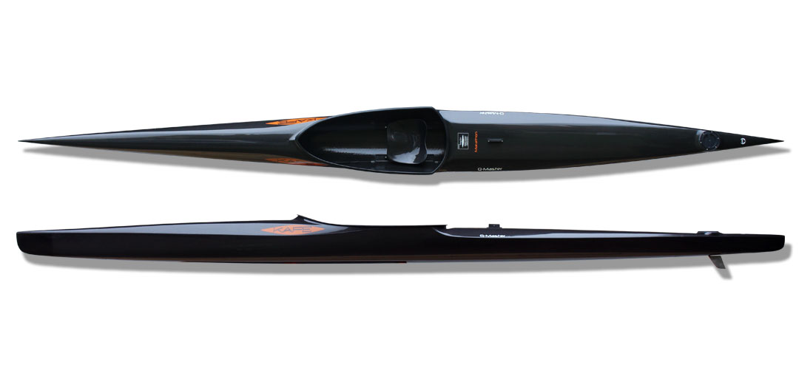
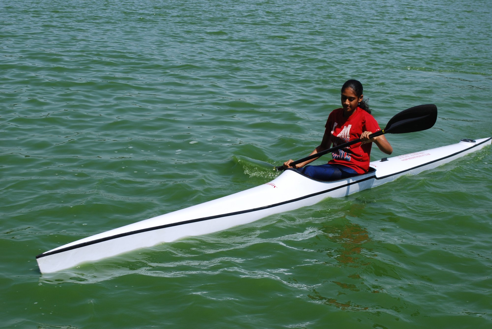
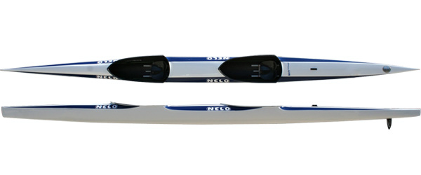
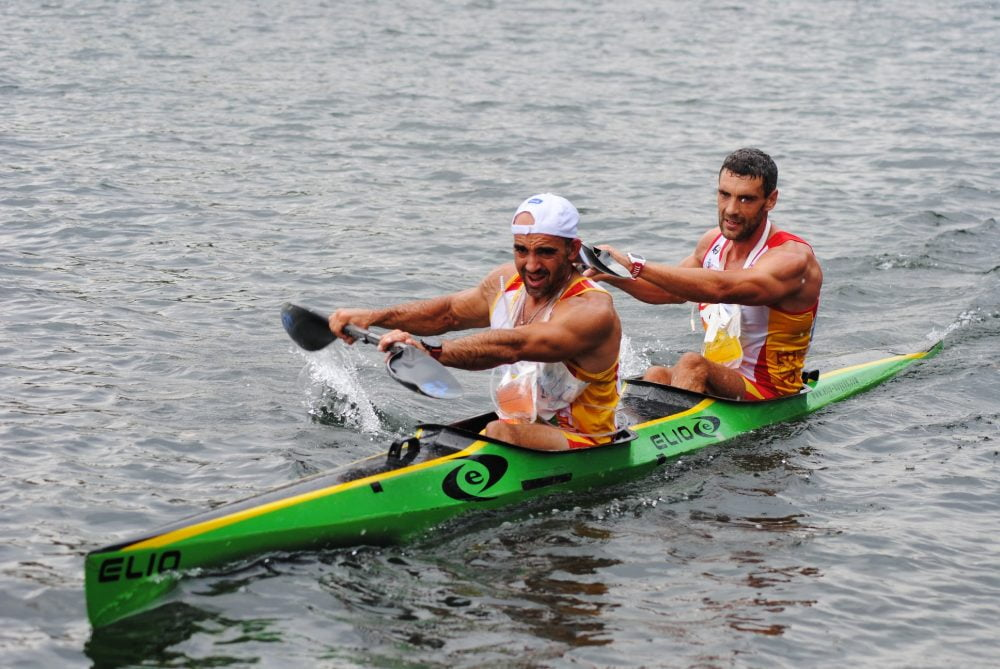
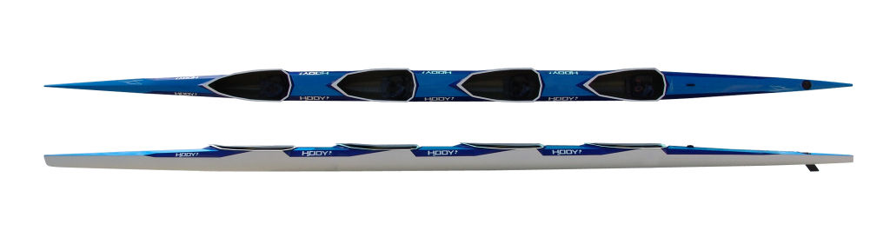
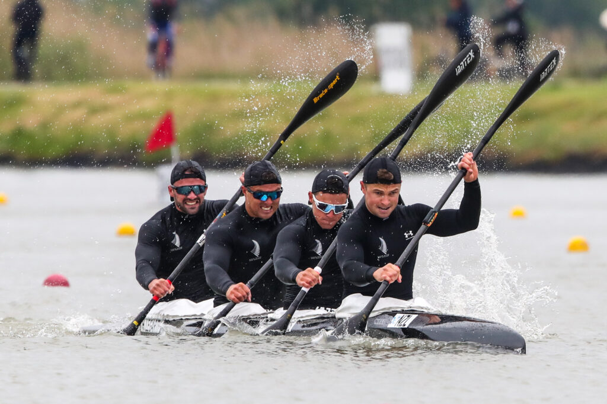
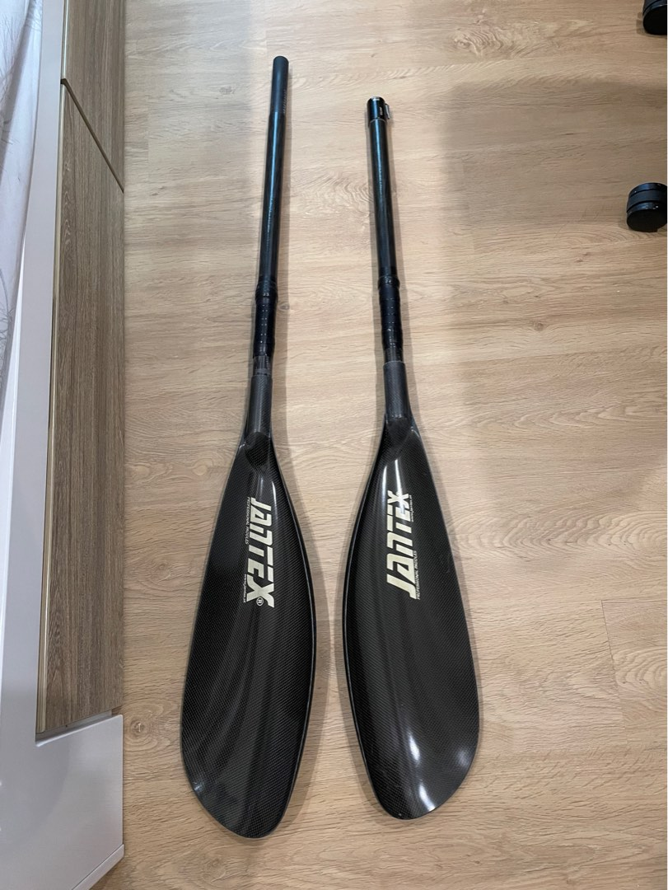
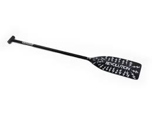

History of Canoe Sprint
Canoe sprint is a sport in which athletes race canoes (C) or kayaks (K) on a flatwater course. In a canoe, paddlers use a single-bladed paddle in high-kneel position whereas in a kayak, paddlers use a double-bladed paddle in a seated position. Canoeing is the common name given to these two distinct categories of kayak and canoe.At the international level, the discipline is competed over four distances from 200m to 5000m, both individually and in teams of up to four. Each discipline is categorized by boat type, number of competitors per boat, gender and race distance, meaning the example of MC2 500m is the Men Canoe Doubles 500m.
The first recognized canoeing competition was held in 1869 and it was organized by John MacGregor, the founder of the British Royal Canoe Club (RCC). Its popularity started to grow in Europe and America and soon trans-Atlantic competition commenced with the founding of the New York Canoe Club. The first women’s competition was also organized in Russia, and by the 1890s, canoe sport was very popular and had a large following in Europe. The next milestone for the sport was its inclusion as an Olympic discipline and it debuted at the 1936 Berlin Olympic Games.
In Singapore, the Singapore Canoe Federation (SCF) is the National Sports Association (NSA) overseeing canoe sprint and its popularity as a sport has grown immensely since 1971. To support this growing community, SCF conducts coaching courses for aspiring individuals who wish to pursue coaching. Regular competitions organized provides a platform for individuals of varying interest levels and proficiency to test themselves or simply enjoy the sport.
SCF is also in charge of the Singapore National Canoe/Kayak Sprint Team that represents Singapore at regional and international competitions such as the South East Asian Games (SEA Games), Asian Games and World Championships. Athletes are qualified for the National Team based on selection time trials and results at the national canoe sprint events, with recommendations from the national coaches. In recent years, our athletes have performed well at regional games, winning 5 Golds and 7 Silvers at the 2015 South East Asian Games, and the first ever canoe sprint medal, a bronze, at the 2018 Asian Games.
The SCF is committed to the development of paddlers in Singapore and we hope that our athletes will be able to maximize their potential in this sport.
Boats


Single Seater Kayak called K1.


Double Seater Kayak called K2.


Quad Seater Kayak called K4.
Paddles

K Paddle
Made in 2 parts that can be connected and adjusted
This allows for changing paddle angle and length of the paddle
Allowing for different people to use the same paddle

C Paddle
Unlike the K paddle with its dual curved blades, there is only one flat blade on a C paddle
Also features an adjustable handle grip for paddlers